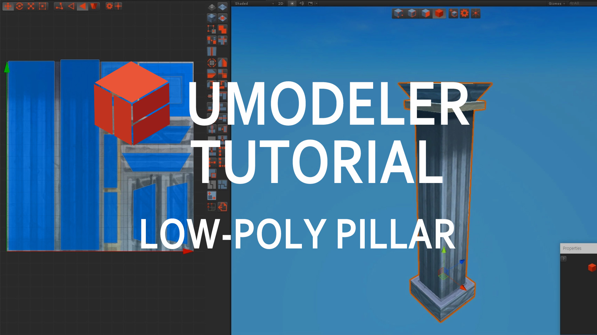
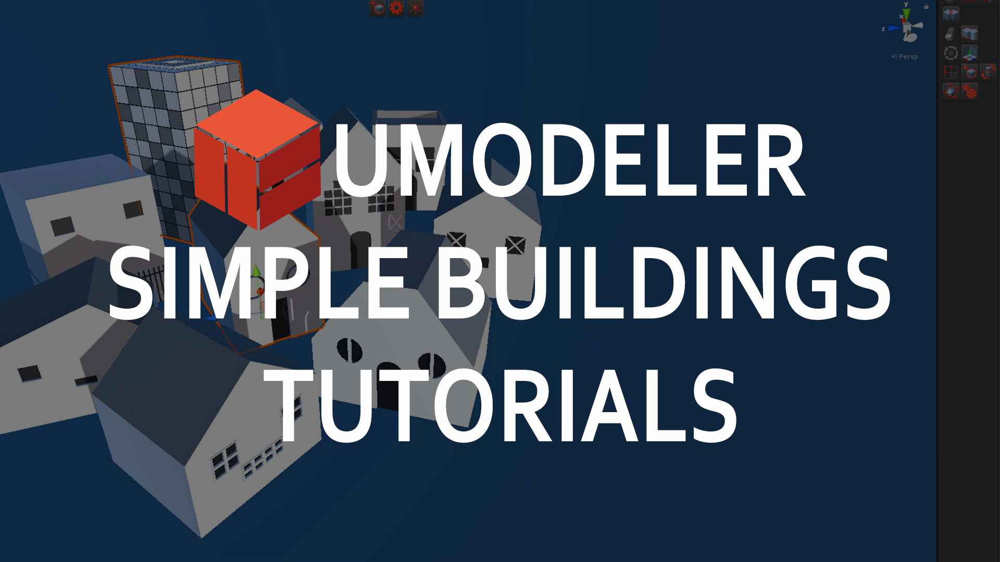
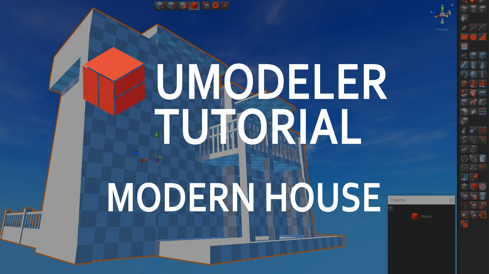
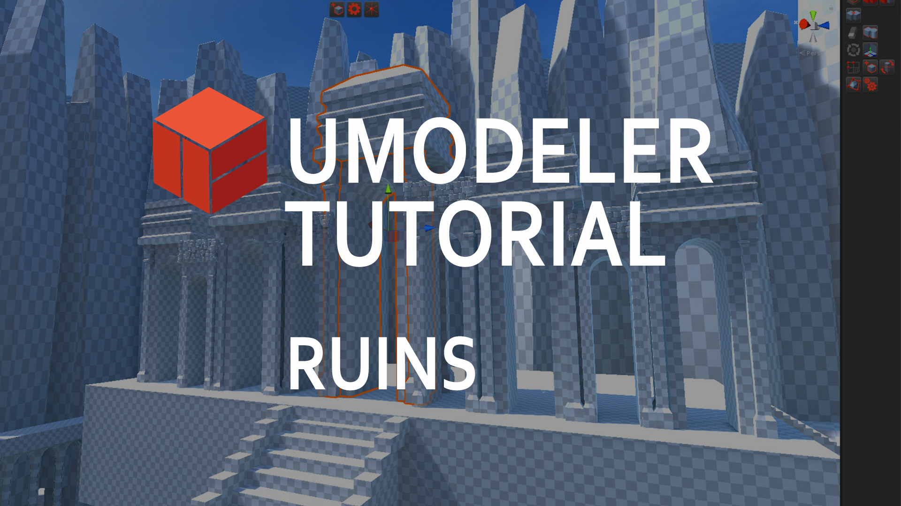
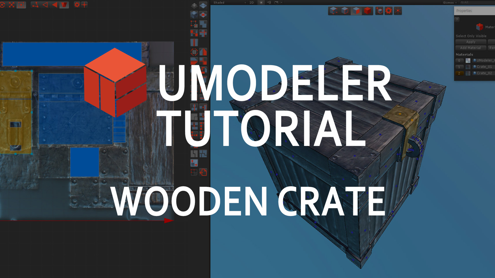

Unity UModeler Manual
Overview
Tutorial Videos
Toolbar, Settings and Preference
Menu
Elements Group
Selection Group
Drawing Group
Primitive Shapes Group
Add Group
Remove Group
Tweak Group
Surface Group
Misc Group
UV Editor
Release Notes
Unity UModeler Manual
Docs
»
Tutorial Videos
View page source
Tutorial Videos
¶
Here are the videos on how to build meshes and levels with UModeler.




